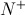
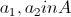
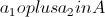
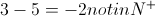
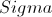
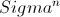
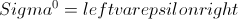
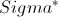

- @acmfly：引用来自“Honghe”的评论 老实说 还是没看明白和... 查看»
- @Honghe：老实说 还是没看明白和数学的闭包怎么联系 查看»
- @郑柯：看的我也眼热，决定学习下 查看»
- @acmfly：引用来自“YangMiao”的评论 http://go-tour-zh.... 查看»
- @YangMiao：http://go-tour-zh.appspot.com/ 无法访问啊大锅... 查看»
- @acmfly：引用来自“红尘一人”的评论 let's lua 让我们撸... 查看»
- @acmfly：引用来自“戏水”的评论 这是刚写的吗？第一个正... 查看»
- @Steve、⑤：go 正在学习中。。。。。 楼主概括的很好！mark... 查看»
- @土豆的春天：好多牛人推荐go，真有那么牛逼？ 查看»
- @onlyou-CEO：软文？？？ 查看»
- 4
- 17
- 21
- 267
- 14404
前言
如果Google一下“闭包”这个词，会发现网上关于闭包的文章已经不计其数，甚至很多人将闭包看做面试JavaScript程序员的必考题（虽然闭包和JavaScript没有什么必然联系）。既然如此，我为什么还要写一篇关于闭包的文章呢？
首先，虽然网上关于闭包的文章甚多，但是很少以较为形式化的角度阐述闭包，而我认为理解闭包的关键之一就是从形式化角度理解其涵义；其次，大多数文章将闭包的概念与JavaScript语言绑定太死，这样容易局限对闭包概念的理解，而难以窥探到其本质。从JavaScript去理解闭包，个人认为这是本末倒置的，应该先理解纯粹意义上的闭包，然后再理解JavaScript中的闭包机制。
基于以上情况，本文将从较为形式化的角度阐述闭包概念，当做对现有网络的资料的一个补充。
一个需要明确的重要事实
在开始阐述闭包之前，我需要特别明确一个非常重要的事实，那就是“闭包（closure）”一词被用于定义两个毫不相关的概念，分别是数学领域抽象代数分支下用于描述集合之于运算的一种性质以及计算机科学程序设计语言分支用于描述函数式语言所支持的一种机制。这种不同大约就如“电影《人猿泰山》”和“五岳之尊泰山”中的“泰山”差不多，两个短语中的“泰山”描述的是两个风马牛不相及的概念，虽然是同一个词。
一般来说，作为程序员我们说的闭包更多是指后者，但是如果你与我一样同时具有一点数学背景，第一次接触“闭包”一词是在抽象数学中的话，那么当刚接触到计算机中的“闭包”时多少会产生困惑，同样，如果你是一个纯粹的程序员，那么当在数学著作中读到“闭包”一词时请小心区分这个“闭包”具体是表述哪一个概念。
我会在下文中分别阐述数学领域和计算机科学领域闭包的概念。
抽象代数中的闭包
抽象代数是一门研究代数结构的数学分支，它的研究对象包括群、环、域和向量空间等等。当然我在这里丝毫没有要大谈特谈这些令人头大的概念的意思，我会尽量以一种易懂的半形式化方式去阐述一些概念。
集合的定义
非正式地，集合是N个对象组成的一个无序、互异且确定的整体。其中N是自然数。这些对象称为集合的元素。
无序性是指集合中的元素不存在序关系（集合上可以定义序关系，但这些序关系不是集合本身的一部分），每个元素的地位是相同的。
互异性是指集合中任意两个元素是不同的，即同一集合中任意两个元素间不存在等价关系。
确定是指对任意一个对象和任意一个集合，这个对象要么属于此集合，要么不属于此集合，二者必居其一，不存在模棱两可的状态（模糊数学中有一种中间隶属状态，本文不考虑模糊数学领域）。
运算的定义
非正式地，集合上的n元运算是一个映射，这个映射将作用于任意n个集合中的元素，并映射为一个结果（注意结果不一定属于这个集合）。
例如，设是正整数集合，那么加法（）和减法（）都可以看做定义在上的二元运算，因为任意两个正整数都可以进行加减。
封闭的定义
有了集合和运算的概念，就可以定义封闭的概念了。
非正式地，如果定义于集合上的运算的运算结果仍然属于，那么运算对于集合是封闭的。下面给出“封闭”的一个半形式化定义：
如果对于任意，有，那么说二元运算对于集合A是封闭的。
例如“”对于是封闭的，因为任意两个正整数的和结果仍然是正整数；但是“”对于不是封闭的，例如3和5属于，但是：。
闭包性质
一个集合满足闭包性质当且仅当这个集合在某个运算或某些运算的搜集下是封闭的，其中“某些运算的搜集下封闭”是指这个集合单独闭合在每个运算之下。
值得一提的是，之前这条定义往往被作为一条公理引入一个代数结构，叫做“闭包公理”。但是现代集合论往往将运算形式化的定义为集合间的运算，所以将其作为公理引入代数结构是多余的（因为可以通过其它公理间接定义闭包公理），但是对于子集是否闭合的问题，闭包公理仍然有意义。
一个例子 – 存在于形式语言与自动机理论中的闭包
上面说了很多东西，我们来看一个抽象代数领域闭包的例子。
我们回想在形式语言与自动机理论中（或者编译原理中也有提到）在定义语言时做的一些推导。
一般我们会先定义一个有限集合，叫做字母表，的n阶幂运算定义为形成一个新的集合，一个对象属于当且仅当它是中任意n个字母连接成的串，其中。而
此时集合满足闭包性质，因为这个集合对于幂运算是封闭的。有兴趣的读者可以自行证明一下。
函数式编程中的闭包
在这一章节开始之前，我需要再和大家明确一个比较纠结的事实，就是在函数式编程领域中当说到“闭包”时，也有可能是指数学领域中闭包的概念，这是因为函数式编程在基础理论与抽象代数有一定亲缘性，所以当在函数式语言著作中讨论“闭包”时，有可能是在抽象数学的上下文中讨论的。然而，在表述上可能会有微妙变化。在函数式语言领域对于数学闭包常用的表述是“如果一个运算的结果仍然能被此运算作用，则这个运算是封闭的”，要注意这只不过是上文提到的“闭包”概念的另一种等价表述而已，如果我们将这个运算的所有结果看做一个集合，那么就可以等价表述说这个运算在这个集合上是封闭的。
而我下面所要阐述的闭包是一种截然不同的概念。所以，当在函数式语言的著作中看到“闭包”时，需要根据上下文环境小心区分其表述哪种概念。
Lambda演算与自由变量
函数式编程语言的基础是lambda演算，这是一套用于研究函数定义、应用和递归的形式系统，由数学家丘奇在20世纪30年代引入。如果您不太熟悉lambda演算，那么维基百科相关页面是很好的快速入门资料，请原谅我不会完整描述lambda演算（因为已经有很多可以参考的资料）。
简单来说lambda演算将计算过程看过一系列的函数代换，例如，下面是加运算的lambda函数（假设+运算已经定义）：
lambda演算就是反复将函数应用于实际值，并用实际值代替参数，最终得出结果。例如下面是7+2的计算过程：
首先用第一个参数（7）代替最外层函数的参数（x），然后用第二个参数（2）代替第二层函数的参数（y），最终得到计算结果。
鉴于如果下面大量使用lambda演算描述问题大家可能会崩溃（我也会崩溃），我将改用函数式语言scheme（Lisp的一个方言）来进行问题描述。注意其实scheme在本质上与lambda演算是等价的，只是看起来更好懂，例如不需要遵循lambda演算一个变态的规定：每个函数只允许有一个参数（虽然任何多参数函数式程序都可以通过Currying过程化归为等价的lambda演算）。
下面是用scheme程序对上述lambda演算的等价表示：
(define (f x y) (+ x y))
可以这样计算7+2：
(f 7 2) ;Value: 9
下面看一个稍微复杂点的例子：
(define (f x) (lambda (y) (+ x y)))
这里定义了函数f，接受一个参数x，特别要注意它的返回值：不是一个值而是一个匿名函数。如果我们把这个函数单独拿出来：
(lambda (y) (+ x y))
可以看到，这个匿名函数接收一个参数y，但是却没有参数x！也就是说，如果脱离上下文执行这个函数，则x处于未指定状态，我们说对于这个函数，y是绑定的，而x是自由的。
一般地：x是一个函数的函数体中的变量，如果x被这个函数的参数指定，则x是绑定于这个函数的，否则说x对于此函数是自由的。
下面可以看到，变量的绑定和自由概念是理解闭包本质的一把钥匙。
程序语言的闭包性质
继续上面的scheme程序，我们已经定义了函数f：
(define (f x) (lambda (y) (+ x y)))
如果我们运行下面程序：
(f 7) ;Value 13: #[compound-procedure 13]
可以看到，f返回了一个过程（匿名函数），按照函数演算规则，这个函数应该是：
(lambda (y) (+ 7 y))
那么下面的运算就很直观了：
((f 7) 2) ;Value: 9
注意这里有一个非常重要的地方（也是闭包性质的关键），那就是这个运算执行了两个函数：f和匿名函数。而f的作用域为(f 7)，这就是说，其实在(f 7)之后，f这个函数就结束了，而x（这里被赋值为7）是f的私有变量（绑定于f），那么程序设计语言的设计者就有两种选择：第一，在函数超出其作用域后立即销毁其绑定变量，如果是这样的话，((f 7) 2) 是无法得出结果的，因为在外层的f运算结束后，存放数值“7”的变量就被释放了，所以匿名函数无法得到其自由变量x的值；显然scheme的设计者做了第二种选择：如果一个函数返回另一个函数，而被返回函数又需要外层函数的变量时，不会立即释放这个变量，而是允许被返回的函数引用这些变量。支持这种机制的语言称为支持闭包机制，而这个内部函数连同其自由变量就形成了一个闭包。
上面的这段话不太好理解，但是请务必多读几遍，因为，这就是闭包的全部。
从Scheme到JavaScript
好的，现在开始讨论JavaScript中的闭包。
上文说过，闭包是函数式语言才有的机制，或者说支持函数式编程泛型的语言才有的性质。一个语言支持函数式编程泛型，如果它同时具有下列特性：
可以将一个函数赋值给一个变量。
函数可以作为参数传递给另一个函数。
函数的返回值可以是一个函数。
结合上面关于闭包性质的定义，就很清楚为什么只有支持函数编程泛型的语言才可以谈闭包性质。
很显然，JavaScript是具有上述三条性质的，所以可以说JavaScript拥有函数式编程泛型。当然，一般我们还是习惯于用命令式的写JavaScript，但是其闭包本质是一样的。为了说明这一点，我将会首先用JavaScript按照函数式泛型重写上面的scheme程序，然后转为命令式。
上文用scheme所写的函数f，可以用JavaScript等价实现如下：
function f(x){ return function(y) { return x + y; }; }
可以执行与上述scheme类似的计算（因为脱离了浏览器，我是用nodejs执行这段JavaScript）：
console.log( (f(7)) (2) ); //9
其中f返回的匿名函数与其自由变量x组成了一个闭包系统。
如果用命令式重写上面的程序，就得到了我们熟悉的闭包：
function f(x){
return function(y) {
return x + y;
};
}
var lam = f(7);
console.log(lam(2));
总结
本文分别讨论了抽象代数和函数式编程中两个截然不同的闭包概念，当然，作为程序员我们更关心的是后者（但前者也不是对程序员一点用也没有，如果学习函数式语言的构造原理，抽象代数中的闭包也是必须理解的概念）。希望本文能对您有所帮助。
开源中国-程序员在线工具：API文档大全(120+) JS在线编辑演示 二维码 更多>>
- 2012/09/18 JavaScript的this和闭包
- 2011/11/18 [转] Javascript闭包
- 2012/09/27 JS闭包的理解
- 2012/02/11 js闭包
- 2011/12/21 闭包（closure）